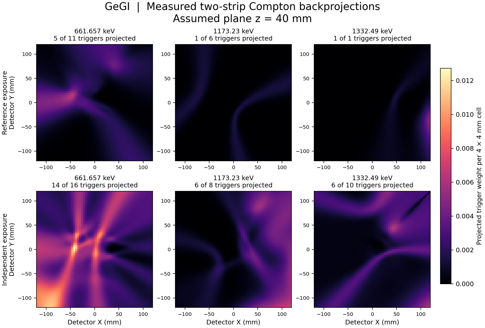

Saved studies and teaching signals
Saved results
Open the current GeGI image, follow the signal chain, or explore a complete Cs137 campaign. Each study retains its own event identities, settings and denominators.
One exposure with Cs-137 and Co-60
In this 0.25 s simulated exposure, 862 of 911 qualified Ge deposit groups matched a unique trigger, and 484 had a qualified slow energy.
Independent source clocks used example activities of 37 kBq for Cs-137 and 37 kBq for Co-60. Delayed deposits from earlier parent decays can enter the exposure. The electronics start from zero with a 50 MS/s digitizer and 15 µV RMS synthetic noise.
Of 1,071 Ge deposit groups, 47 lacked a usable native charge signal and 113 more fell in or near gaps in the signal history. Among qualified groups, 45 were missed, 4 shared 2 merged triggers and 0 had ambiguous matches.
| Arrival neighborhood | Ge groups | Qualified | Unique match | Matched slow energy |
|---|---|---|---|---|
| Isolated | 1,025 | 887 | 842/887 | 471/887 |
| Another Ge group within 6 µs | 46 | 24 | 20/24 | 13/24 |
Over 0.225318 s of qualified ADC time, the readout returned 864 triggers and 484 usable slow energies. 0 triggers lacked a matching deposit. A trigger uses the coincident rise on both faces. The baseline slow-energy route requires one qualified collecting strip on each face and agreement between their energies.
Measured detector hit map
484 of 864 qualified triggers gave a single-pixel slow energy and contribute one count at their X/Y strip intersection. The other triggers gave 229 multi-strip energy totals and 151 with no qualified energy.
| Y / X | X01 | X02 | X03 | X04 | X05 | X06 | X07 | X08 | X09 | X10 | X11 | X12 | X13 | X14 | X15 | X16 |
|---|---|---|---|---|---|---|---|---|---|---|---|---|---|---|---|---|
| Y16 | 0 | 0 | 0 | 0 | 1 | 1 | 2 | 2 | 3 | 1 | 1 | 2 | 2 | 0 | 0 | 0 |
| Y15 | 0 | 0 | 0 | 5 | 0 | 0 | 0 | 2 | 2 | 1 | 3 | 3 | 4 | 0 | 0 | 0 |
| Y14 | 0 | 2 | 0 | 1 | 6 | 0 | 1 | 2 | 2 | 1 | 1 | 2 | 2 | 2 | 0 | 0 |
| Y13 | 1 | 0 | 4 | 3 | 3 | 3 | 2 | 2 | 1 | 3 | 7 | 1 | 2 | 2 | 0 | 0 |
| Y12 | 0 | 0 | 7 | 7 | 5 | 2 | 0 | 0 | 0 | 0 | 0 | 0 | 3 | 1 | 2 | 1 |
| Y11 | 4 | 1 | 0 | 5 | 1 | 1 | 2 | 1 | 1 | 0 | 1 | 3 | 4 | 4 | 3 | 3 |
| Y10 | 2 | 0 | 0 | 4 | 4 | 0 | 1 | 1 | 0 | 2 | 1 | 2 | 1 | 3 | 0 | 5 |
| Y09 | 6 | 1 | 1 | 0 | 1 | 5 | 4 | 3 | 5 | 3 | 1 | 5 | 1 | 4 | 4 | 4 |
| Y08 | 0 | 1 | 2 | 5 | 0 | 4 | 0 | 2 | 6 | 4 | 1 | 1 | 5 | 5 | 5 | 3 |
| Y07 | 3 | 0 | 2 | 0 | 0 | 0 | 3 | 0 | 0 | 0 | 1 | 2 | 1 | 3 | 11 | 5 |
| Y06 | 0 | 1 | 1 | 3 | 2 | 8 | 3 | 5 | 2 | 1 | 0 | 2 | 5 | 0 | 6 | 4 |
| Y05 | 1 | 2 | 1 | 9 | 2 | 6 | 2 | 0 | 1 | 0 | 4 | 5 | 6 | 5 | 4 | 3 |
| Y04 | 2 | 1 | 7 | 0 | 1 | 3 | 5 | 2 | 1 | 1 | 3 | 1 | 1 | 0 | 1 | 0 |
| Y03 | 0 | 4 | 3 | 0 | 3 | 3 | 1 | 1 | 0 | 1 | 1 | 3 | 8 | 0 | 1 | 0 |
| Y02 | 0 | 0 | 0 | 3 | 2 | 1 | 0 | 0 | 1 | 0 | 3 | 5 | 1 | 0 | 0 | 0 |
| Y01 | 0 | 0 | 0 | 0 | 1 | 2 | 2 | 1 | 2 | 3 | 2 | 1 | 0 | 0 | 0 | 0 |
Fast neighbor readings during acquisition
A 50 ms simulated acquisition at 18.5 kBq Cs-137 and 74 kBq Co-60 recorded 113 qualified single-pixel triggers. 92 had ratios on both faces. For 21 triggers, an outer strip had only one neighbor on its face.
The fast branch integrates the signed neighbor signal from 0 to 240 ns relative to the trigger. The dimensionless ratio divides the lower-coordinate reading minus the higher-coordinate reading by the trigger’s slow energy.
| Collector | Slow (keV) | Lower neighbor (keV-equivalent) | Higher neighbor (keV-equivalent) | Fast ratio |
|---|---|---|---|---|
| X15 | 457.400 | X14 +23.735 | X16 +14.297 | +0.020634 |
| Y12 | 457.412 | Y11 -3.615 | Y13 -3.213 | -0.000877 |
In a separate noiseless control, 12 saved pulses scaled to 250 keV were replayed at four ADC phases (0, 5, 10, 15 ns). Moving the gate from the trigger to the first ADC sample at or after the known simulated injection kept the ADC codes and baseline fixed. Across 96 face comparisons, the ratio changed by 1.37e-04 RMS, with a maximum absolute shift of 3.81e-04.
What the simulated readout resolves
| Measurement | Result |
|---|---|
| Lower trigger threshold | On the same 0.25 s ADC record, lowering the coincidence threshold from 5 to 4 keV-equivalent per 20 ns raised unique matches from 862 to 881 of 911 evaluable groups. Triggers rose from 864 to 883 and measured energies from 713 to 723. The quiet threshold stayed at 3 keV-equivalent per sample. In 0.20 s of empty Gaussian-noise controls, the standard and low-energy profiles recorded 0 and 0 accidentals, respectively. The one-sided 95% Poisson upper limit was 15.0/s for either profile under this noise model. |
| Pulse overlap | At a separation of 0.8 µs, 72/72 noisy trials resolved two triggers, while 36/144 resolved pulses lacked a single-pixel energy. Across all nominal-noise delays, 5 face ratios were withheld for overlap. The 1,341 available fast ratios changed from their matched isolated values by 9.87e-05 RMS and at most 6.96e-04. 0 exceeded the corresponding energy’s isolated-noise 95th percentile. |
| Calibrated position | The same 80 held-out points were replayed at 250–662 keV and two timing offsets. Both lateral coordinates were available for 32–40/80 points per noisy condition. On those points radial XY RMS error was 1.00–1.20 mm, versus 1.82–1.91 mm at the strip centers. Across all 80, using the measured strip center on an unavailable axis gave 1.22–1.25 mm versus 1.82 mm for strip centers. Depth RMS error was 0.28–0.30 mm on all 80 points per condition. |
Position uses the matched simulated field and four calibrated strip pairs. These are nominal electronics comparisons on saved simulated signals. Read the numerical summaries and source hashes (JSON).
Slow energy from multiple collecting strips
713/864 qualified triggers had a slow energy after retaining the 484 single-pixel values and recovering 229 of 380 triggers previously without an estimate. This recovers 229 of 230 triggers flagged for strip multiplicity.
The method sums qualified collecting strips on each face and averages the two sums when they agree. Additional entries require multiple collecting strips on at least one face. Guard collection was flagged in 142 of the 151 triggers still without an energy. Position and Compton reconstruction require a separate eligible strip pairing and any applicable position calibration.
The spectrum uses the ADC measurements, including 2 added merged-trigger totals. Each merged trigger contributes one aggregate energy. The 227 added entries with a unique deposit match are eligible for per-deposit bias checks. Compared with the simulated Ge deposit, the mean energy difference was -0.0024 keV and the root-mean-square difference was 0.263 keV (227 matches). Compared with the matched isolated replay, the mean energy difference was +0.0064 keV and the root-mean-square difference was 0.046 keV (227 matches).
Open the energy comparison, isolated controls and spectra (JSON).
484 baseline and 229 additional entries in view. Both use 20 keV bins from 0 to 3000 keV, with lower edges included. Baseline underflow, overflow and exact zeros are 0, 0 and 0. Additional underflow, overflow and exact zeros are 0, 0 and 0.
Arrival neighborhoods use deposition times from both sources. These counts apply to the qualified portion of the simulated exposure. The JSON includes the signal-history rules, matching criteria and the noiseless close-pair cross-check. Open the exposure census, spectrum and settings (JSON).
Apparent GeGI depth from collector timing
The depth table uses the time difference between the X and Y collecting strips as their preamplifier signals pass 50% of their measured amplitude. The calibration uses isolated 500 keV deposits at pixel centers on the saved simulated field. It has usable timing curves on 216 of 256 pixels. Independent off-center checks covered 16 pixels.
Two simultaneous deposits
These tests reused eight independent off-center waveforms at several energies and ADC settings. Nearby signals shift the collector timing and can bias apparent depth. Errors use the same scored sites for the simultaneous and isolated cases.
| Strip neighborhoods | Mixtures with both depths | Sites with depth | Sites scored | Simultaneous RMS error | Isolated RMS error |
|---|---|---|---|---|---|
| Overlapping neighborhoods | 12/24 | 32/48 | 32 | 0.660 mm | 0.087 mm |
| Separate neighborhoods | 12/24 | 36/48 | 36 | 0.074 mm | 0.074 mm |
In the saved 0.25 s simulated acquisition, 360/484 single-pixel triggers had apparent depths. Both site timings were in range for 34/58 energy-compatible two-strip assignments. Each apparent depth is conditional on its strip assignment.
Joint fits in the mixed-source acquisition
On 41 matched occurrences from 27 original simulated groups, the RMS angle to the direction between the charge centroids was 24.27° with both sites at the midplane, 12.31° with a joint fast-signal and timing fit, and 12.62° with a joint ADC-waveform fit. Across the same 82 sites, depth RMS errors were 3.06, 1.06, and 0.92 mm, respectively.
Interaction order and Compton angle
Of 76 two-strip triggers, 18 fell in the line-energy windows and 7 yielded cones. Two individual simulated events had a transport history of exactly two interactions that deposited the photon’s full energy. Both orders were allowed by the measured energies.
| Simulated event and order | Center waveform fit | Lateral waveform fit | Transport vertices |
|---|---|---|---|
| Cs-137, true order | −20.45° | −11.06° | −10.60° |
| Cs-137, reverse order | +7.24° | −4.74° | −4.04° |
| Co-60, true order | −4.27° | Center fit only | +0.59° |
| Co-60, reverse order | +58.52° | Center fit only | +50.72° |
Transport labels the true order and supplies the vertices for the last column. The comparison retains both orders. For Cs-137, the reverse order falls closer to the source even with the transport vertices. The Cs-137 photon scattered through 139.76° with 193.45 keV left, compared with the 201.52 keV predicted for an electron at rest. The simulated bound-electron motion shifts the energy at the same scatter angle. Geant4 Livermore Compton model.
At the two Cs-137 pixels, waveform fits on the same 8 held-out two-deposit mixtures reduced RMS axis error from 18.77° at strip centers to 10.81° with lateral positions. RMS transverse error across those 16 sites was 1.75 and 1.31 mm, respectively.
Read the depth points, cone comparisons and source hashes (JSON).
Compton backprojections from two acquisitions
Each row shows one simulated 250 ms exposure. The columns group triggers by measured energy. These maps use reconstructed energies and waveform-fit depths at strip centers. All six panels share a color scale in projected trigger weight per 4 × 4 mm cell. The assumed plane is z = 40 mm with X and Y spanning ±120 mm. The model uses a nominal 5° angular width plus strip-position uncertainty.

| Energy-window center | Reference triggers projected | Reference hypotheses | Independent triggers projected | Independent hypotheses |
|---|---|---|---|---|
| 661.657 keV | 5/11 | 8 | 14/16 | 31 |
| 1173.23 keV | 1/6 | 2 | 6/8 | 11 |
| 1332.49 keV | 1/1 | 2 | 6/10 | 10 |
Across all measured energies, 58/76 reference triggers and 67/79 independent triggers contributed. Each two-strip trigger supplies one unit of weight, shared among compatible strip pairings and allowed interaction orders. Each usable hypothesis spreads its share over the displayed plane. Unresolved weight stays outside the image (18 reference units and 12 independent units).
These sparse backprojections depend on the assumed plane and its boundaries. Detector sensitivity is uncalibrated, and source position, distance and activity remain undetermined. View the acquisition counts and source hashes (JSON).
When can GeGI resolve two close pulses?
With nominal noise, all groups sustained two matched triggers from 300 ns on this scan. Same- and adjacent-strip groups met both energy and XY tolerances from 1000 ns. Far-strip energy met its tolerance from 300 ns.
Two simulated native charge responses were shifted in time and added before digitization. The same electronic stream supplied the triggers, energies and strip positions. Same-strip pulses share both collecting strips. Adjacent pulses differ by one X strip, and one adjacent pair shares a Y strip. Far pulses are separated by at least three strip pitches on each face.
Triggers requires exactly two reconstructed triggers at a nonzero delay, each within ±60 ns of the expected trigger time. Energy and XY also require the correct collecting strips for both pulses and a qualified energy or both calibrated lateral coordinates, respectively. Each fraction uses all trials at that delay and strip relation.
| Delay (ns) | Same strips | Adjacent strips | Far strips | ||||||
|---|---|---|---|---|---|---|---|---|---|
| Triggers | Energy | XY | Triggers | Energy | XY | Triggers | Energy | XY | |
| 0 | 0/12 | 0/12 | 0/12 | 0/12 | 0/12 | 0/12 | 0/12 | 0/12 | 0/12 |
| 20 | 0/12 | 0/12 | 0/12 | 0/12 | 0/12 | 0/12 | 0/12 | 0/12 | 0/12 |
| 40 | 0/12 | 0/12 | 0/12 | 0/12 | 0/12 | 0/12 | 0/12 | 0/12 | 0/12 |
| 60 | 0/12 | 0/12 | 0/12 | 0/12 | 0/12 | 0/12 | 0/12 | 0/12 | 0/12 |
| 100 | 0/12 | 0/12 | 0/12 | 0/12 | 0/12 | 0/12 | 0/12 | 0/12 | 0/12 |
| 140 | 0/12 | 0/12 | 0/12 | 0/12 | 0/12 | 0/12 | 0/12 | 0/12 | 0/12 |
| 200 | 2/12 | 0/12 | 0/12 | 2/12 | 0/12 | 0/12 | 3/12 | 2/12 | 0/12 |
| 300 | 12/12 | 0/12 | 0/12 | 12/12 | 0/12 | 0/12 | 12/12 | 12/12 | 0/12 |
| 400 | 12/12 | 0/12 | 0/12 | 12/12 | 0/12 | 0/12 | 12/12 | 12/12 | 0/12 |
| 500 | 12/12 | 0/12 | 0/12 | 12/12 | 0/12 | 0/12 | 12/12 | 12/12 | 0/12 |
| 600 | 12/12 | 0/12 | 0/12 | 12/12 | 0/12 | 0/12 | 12/12 | 12/12 | 0/12 |
| 800 | 12/12 | 0/12 | 0/12 | 12/12 | 6/12 | 6/12 | 12/12 | 12/12 | 0/12 |
| 1000 | 12/12 | 12/12 | 12/12 | 12/12 | 12/12 | 12/12 | 12/12 | 12/12 | 0/12 |
| 1200 | 12/12 | 12/12 | 12/12 | 12/12 | 12/12 | 12/12 | 12/12 | 12/12 | 0/12 |
| 1600 | 12/12 | 12/12 | 12/12 | 12/12 | 12/12 | 12/12 | 12/12 | 12/12 | 0/12 |
| 2000 | 12/12 | 12/12 | 12/12 | 12/12 | 12/12 | 12/12 | 12/12 | 12/12 | 0/12 |
| 3000 | 12/12 | 12/12 | 12/12 | 12/12 | 12/12 | 12/12 | 12/12 | 12/12 | 0/12 |
| 4500 | 12/12 | 12/12 | 12/12 | 12/12 | 12/12 | 12/12 | 12/12 | 12/12 | 0/12 |
| 6000 | 12/12 | 12/12 | 12/12 | 12/12 | 12/12 | 12/12 | 12/12 | 12/12 | 0/12 |
Compare without electronic noise
| Delay (ns) | Same strips | Adjacent strips | Far strips | ||||||
|---|---|---|---|---|---|---|---|---|---|
| Triggers | Energy | XY | Triggers | Energy | XY | Triggers | Energy | XY | |
| 0 | 0/12 | 0/12 | 0/12 | 0/12 | 0/12 | 0/12 | 0/12 | 0/12 | 0/12 |
| 20 | 0/12 | 0/12 | 0/12 | 0/12 | 0/12 | 0/12 | 0/12 | 0/12 | 0/12 |
| 40 | 0/12 | 0/12 | 0/12 | 0/12 | 0/12 | 0/12 | 0/12 | 0/12 | 0/12 |
| 60 | 0/12 | 0/12 | 0/12 | 0/12 | 0/12 | 0/12 | 0/12 | 0/12 | 0/12 |
| 100 | 0/12 | 0/12 | 0/12 | 0/12 | 0/12 | 0/12 | 0/12 | 0/12 | 0/12 |
| 140 | 0/12 | 0/12 | 0/12 | 0/12 | 0/12 | 0/12 | 0/12 | 0/12 | 0/12 |
| 200 | 3/12 | 0/12 | 0/12 | 3/12 | 0/12 | 0/12 | 3/12 | 2/12 | 0/12 |
| 300 | 12/12 | 0/12 | 0/12 | 12/12 | 0/12 | 0/12 | 12/12 | 12/12 | 0/12 |
| 400 | 12/12 | 0/12 | 0/12 | 12/12 | 0/12 | 0/12 | 12/12 | 12/12 | 0/12 |
| 500 | 12/12 | 0/12 | 0/12 | 12/12 | 0/12 | 0/12 | 12/12 | 12/12 | 0/12 |
| 600 | 12/12 | 0/12 | 0/12 | 12/12 | 0/12 | 0/12 | 12/12 | 12/12 | 0/12 |
| 800 | 12/12 | 0/12 | 0/12 | 12/12 | 6/12 | 6/12 | 12/12 | 12/12 | 0/12 |
| 1000 | 12/12 | 12/12 | 12/12 | 12/12 | 12/12 | 12/12 | 12/12 | 12/12 | 0/12 |
| 1200 | 12/12 | 12/12 | 12/12 | 12/12 | 12/12 | 12/12 | 12/12 | 12/12 | 0/12 |
| 1600 | 12/12 | 12/12 | 12/12 | 12/12 | 12/12 | 12/12 | 12/12 | 12/12 | 0/12 |
| 2000 | 12/12 | 12/12 | 12/12 | 12/12 | 12/12 | 12/12 | 12/12 | 12/12 | 0/12 |
| 3000 | 12/12 | 12/12 | 12/12 | 12/12 | 12/12 | 12/12 | 12/12 | 12/12 | 0/12 |
| 4500 | 12/12 | 12/12 | 12/12 | 12/12 | 12/12 | 12/12 | 12/12 | 12/12 | 0/12 |
| 6000 | 12/12 | 12/12 | 12/12 | 12/12 | 12/12 | 12/12 | 12/12 | 12/12 | 0/12 |
Controls and stable scan ranges
The controls replay each input pulse by itself. The paired-energy tolerance is 2.0% relative to the isolated energy estimate. The paired XY tolerance is 1 mm radially from the isolated position estimate.
| Strip relation | Noise | Matched trigger | Energy | XY | Correct pixel |
|---|---|---|---|---|---|
| Same strips | Nominal electronic noise | 16/16 | 16/16 | 16/16 | 16/16 |
| Adjacent strips | Nominal electronic noise | 16/16 | 16/16 | 16/16 | 16/16 |
| Far strips | Nominal electronic noise | 16/16 | 16/16 | 8/16 | 16/16 |
| Same strips | Without electronic noise | 16/16 | 16/16 | 16/16 | 16/16 |
| Adjacent strips | Without electronic noise | 16/16 | 16/16 | 16/16 | 16/16 |
| Far strips | Without electronic noise | 16/16 | 16/16 | 8/16 | 16/16 |
Empty controls had 0 false triggers in 16 noisy windows and 0 in 2 noiseless windows.
A stable scan range starts when all trials pass at that delay and every subsequent sampled delay, with at least 3 sampled delays in the range. A dash marks a missing all-pass range.
| Strip relation | Noise | Triggers | Energy | XY | Energy within tolerance | XY within tolerance | Energy and XY within tolerance |
|---|---|---|---|---|---|---|---|
| Same strips | Nominal electronic noise | 300 | 1000 | 1000 | 1000 | 1000 | 1000 |
| Adjacent strips | Nominal electronic noise | 300 | 1000 | 1000 | 1000 | 1000 | 1000 |
| Far strips | Nominal electronic noise | 300 | 300 | — | 300 | — | — |
| Same strips | Without electronic noise | 300 | 1000 | 1000 | 1000 | 1000 | 1000 |
| Adjacent strips | Without electronic noise | 300 | 1000 | 1000 | 1000 | 1000 | 1000 |
| Far strips | Without electronic noise | 300 | 300 | — | 300 | — | — |
The 1,368 paired trials used ordered energies of 250 + 250, 250 + 125, 125 + 250 keV with sampling phases of 0 and 10 ns. Nominal noise was 15 µV RMS before analog-to-digital conversion. Far-strip pairs include a location outside the position calibration. The sampled responses characterize the nominal simulated electronics.
Open double-pulse counts, errors and scan settings (JSON).
How neighboring GeGI strips sense a drifting charge
During drift, both neighboring strips respond to the moving carriers. Their induced charge returns to zero, while their fast areas differ. The collecting strip supplies the slow energy signal.

Strip measurements for this event
| Strip | Largest |Q| (keV equivalent) | Final Q (keV equivalent) | Fast area (V·ns) | Slow energy (keV) |
|---|---|---|---|---|
| X02 | 13.06 | 0.00 | -0.074 | Below threshold |
| X03 | 154.97 | 154.97 | 2.521 | 154.98 |
| X04 | 27.41 | 0.00 | -0.124 | Below threshold |
Event samples and readout settings · View the saved Compton study
Position calibration at the strip edge
Both simulated deposition centroids in primary 2950 lie beyond the earlier ±0.4-pitch position range along one axis. The following detector-coordinate XYZ positions are the simulated deposited-energy centroids.
- Site A · X06/Y10 (-12.636, 9.642, -0.461) mm. The centroid projects +0.453 pitch from the strip centre on Y, just outside the modeled gap from 9.750 to 10.000 mm.
- Site B · X08/Y11 (-4.872, 12.728, 2.926) mm. The centroid projects -0.487 pitch from the strip centre on X, within the modeled gap from -5.062 to -4.812 mm.
We compared two calibrations of the same interpolation using the signed neighboring-strip response and the measured timing difference between faces. At 500 keV, training on the inner reference points gave a coordinate for 5/24 held-out injections. Adding the edge references raised coverage to 16/24. On the 5 points covered by both calibrations, the one-axis RMS errors were 1.887 and 1.887 mm, respectively. On the 16 points shared with the timing-only comparison, RMS error was 1.117 mm with both observables, 0.389 mm with timing alone, and 0.224 mm at the known gap midpoint. Timing alone returned 24/24 positions with 0.321 mm RMS. The midpoint comparison uses advance knowledge of which gap was scanned.
| Offset toward neighbor (pitch) | Site A · Y | Site B · X | ||
|---|---|---|---|---|
| z = -2.5 mm | z = 2.5 mm | z = -2.5 mm | z = 2.5 mm | |
| 0.425 | -1.950 mm | -0.310 mm | -0.031 mm | +1.354 mm |
| 0.462 | -2.148 mm | -0.304 mm | -0.029 mm | +1.417 mm |
| 0.486 | -2.354 mm · gap | -0.224 mm · gap | -0.019 mm · gap | +1.385 mm · gap |
| 0.506 | Outside model support · adjacent strip · gap | Outside model support · adjacent strip · gap | Outside model support · adjacent strip · gap | Outside model support · adjacent strip · gap |
| 0.519 | Outside model support · adjacent strip · gap | -0.039 mm · adjacent strip · gap | +0.020 mm · adjacent strip · gap | Outside model support · adjacent strip · gap |
| 0.539 | Outside model support · adjacent strip | -0.065 mm · adjacent strip | +0.028 mm · adjacent strip | Outside model support · adjacent strip |
Terminal collection moved to the adjacent strip for 12/24 points. The slow branch returned a single strip on each face for 24/24. The simulations hold the other strip coordinate at its centre and use isolated pulses with no added noise. Carrier diffusion and self-repulsion are disabled. The two sites in primary 2950 still require a separate reconstruction. Open the edge geometry, coverage and error data (JSON).
Interaction ordering benchmark
Which interaction could have happened first?
The run started with 5,000 simulated photons of 662 keV each. Of the 42 that deposited energy in germanium, 4 had one energy-compatible pairing between faces. The two angle columns assume scattering from a stationary free electron followed by full absorption. The last column checks the inferred order against the simulated photon history. It uses parent interactions depositing at least 5 keV.
| Primary | Deposited in Ge (keV) | Site A (keV) | Site B (keV) | A → B | B → A | Transport reference |
|---|---|---|---|---|---|---|
| 1412 | 470.40 | X02/Y08 · 363.04 | X03/Y09 · 107.37 | Excluded | 47.26° | 4 significant interactions |
| 1575 | 370.10 | X10/Y05 · 236.79 | X11/Y04 · 133.32 | Excluded | 77.13° | A → B |
| 2950 | 662.00 | X06/Y10 · 488.78 | X08/Y11 · 173.25 | Excluded | 43.41° | A → B |
| 3472 | 418.13 | X09/Y02 · 169.36 | X10/Y01 · 248.79 | 80.32° | 142.67° | A → B |
Primary 2950 deposited the full source energy in germanium. The energy model excludes the order recorded by transport. The earlier within-strip fit placed its two sites 0.45 and 2.49 mm from their simulated centroids. See the edge-position check. Across 16 independent two-site mixtures, fitting positions within the strips changed lateral RMS error from 1.75 to 0.94 mm.
Two further runs used 5,000 photons at x = -40 mm and 5,000 at x = +40 mm. The runs yielded 16 and 12 unique energy pairings, respectively. Of those, 1 and 3 deposited the full photon energy in germanium and matched the cells of both significant transport interactions. The energy model allowed both orders in 4/4 matched events.
Two-site strip-pairing benchmark
Pairing X and Y strips in two-site events
Slow-branch energies left two possible X–Y pairings in 8/8 fixed simulated mixtures. The sites had equal energies and shared neighboring strips. Combining signed fast area with centered constant-fraction discriminator (CFD) times ranked the known simulated pairing first in 8/8. Within the control scale, 6/8 had only the known pairing and 2/8 still had both. The reconstruction retains both alternatives in 8/8 cases.
| Digital observable | Lower residual | Within control scale | |||||
|---|---|---|---|---|---|---|---|
| Known | Alternate | Tie | Known only | Alternate only | Both | Neither | |
| X–Y timing within each pair | 0 | 1 | 7 | 0 | 0 | 8 | 0 |
| Centered timing of four collecting strips | 7 | 1 | 0 | 6 | 0 | 2 | 0 |
| Signed fast area of nine strips | 7 | 1 | 0 | 6 | 0 | 2 | 0 |
| Signed fast area + centered timing | 8 | 0 | 0 | 6 | 0 | 2 | 0 |
The control scale is the largest residual at known positions in 40 separately composed simulated control mixtures. The same model supplied 396 training injections. These fixed mixtures use nominal readout. Experimental pairing accuracy remains unmeasured. Case counts and fit scores.
In 16 separate mixtures at held-out positions, the same control scale left only the known pairing in 12/16 using fast area alone and in 8/16 using both observables, with both pairings within scale in 4/16 and 8/16, respectively.
Learn the chain · six representative Cs137 signals
Six saved signals from the four-case Cs137 10K study, from deposits through charge, shaping and peak ADC. Illustrative examples, not a statistical sample.
Cs137 10K · four detector cases
AK02, SAP22, GeRC02 Li50min and KMRC01 candidate · 10,000 initial Cs137 decays in each of four separate cases. Charge/readout, stage spectra, radiation events and complete scalar ledgers.
Cs137 1M · two detector cases
AK02 and SAP22 · one million initial decays per detector · nominal cryostat. Available views are ensemble truth/response spectra and complete scalar group records.
Retired small studies
Earlier gamma and two-position examples
The 200-primary bare-detector, 40-primary cryostat gamma and earlier GeGI two-position public bundles have been retired. Their scientific originals remain in the local workspace. Use the current GeGI study or six Cs137 teaching signals above; these are separate datasets.